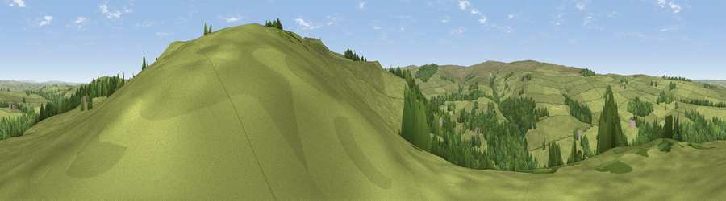

Viewpoint near Catton
#23609 in England · top 63% of its area beats it · near CattonThe view, rendered

A 360° render of this exact spot computed from the terrain model, tree cover and land cover — summer colours, afternoon light, calibrated against photographs of famous viewpoints. Real trees, hedges and buildings will differ in detail.
The panorama
Grey silhouette: terrain skyline in each direction (720 bearings, Earth curvature and refraction included). Dashed green: skyline with trees (+15 m) and buildings (+8 m) as obstacles. Blue strip: how far the ground is visible on each bearing.
Where the view opens
Wedge length = distance to the farthest visible ground on that bearing (vegetation-aware). Rings at 10, 25 and 50 km.
What fills the view
72% grassland · 27% woodland
Angular shares of the visible panorama (visual magnitude), not map area. Landscape diversity 0.27 (0–1 Shannon).
Key numbers
More beautiful places nearby
The staircase of upgrades: each row has a higher view potential than everything closer. Driving times are estimates from straight-line distance, calibrated against real road routing — check an actual route before setting out.
| Place | Direction | Drive | Score |
|---|---|---|---|
| Viewpoint near Catton | S · 1 km | ~3 min | 57.0 |
| Viewpoint near Catton | SSE · 1 km | ~3 min | 66.0 |
| Viewpoint near Allendale | SSE · 3 km | ~7 min | 68.1 |
| Viewpoint c11151_7470 | W · 5 km | ~11 min | 68.4 |
| Viewpoint near Allendale | SSE · 5 km | ~12 min | 70.0 |
| Viewpoint near Melkridge | NNW · 11 km | ~22 min | 70.6 |
| Viewpoint near Allenheads | SSE · 13 km | ~23 min | 74.6 |
| Grey Nag | SW · 15 km | ~27 min | 75.7 |
54.90703, -2.33490 · source: screening · position refined by local search. Computed location — check access rights before visiting.